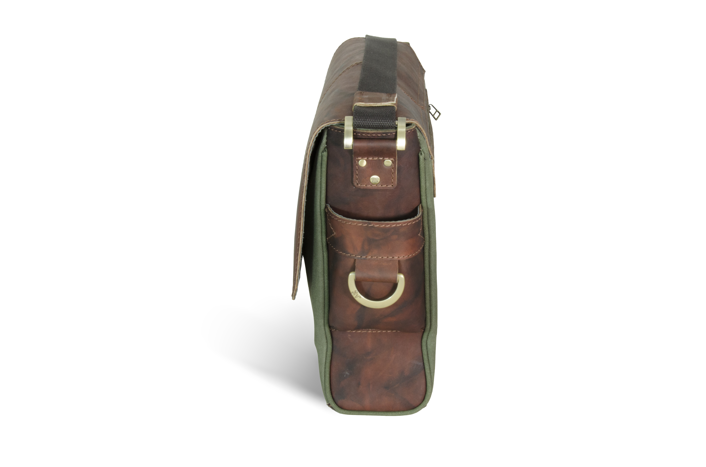

Detail
Santorini
S - 3
時尚復古風格設計採用棉帆布和牛皮材質，大型金屬配件，經典優雅的外觀簡單而經典的設計，耐用也易于使用，做為背包可以使用很長時間他是休閒設計風格，可以匹配各種顏色的協調
Messenger Bag
Material
Recycled Plastic Bottles、
Genuine Leather
Spec
16
1
/
4
"L X 11
3
/
4
"W X 5 "H
41 X 30 X 13 cm
MSRP
USD$ 145